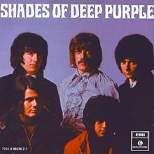
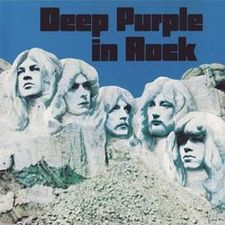
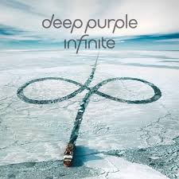

|  | Shades of Deep Purple è il primissimo album della band, con il quale si è fatta conoscere |
|---|---|
|  | Deep Purple in Rock è il quarto album del gruppo, ed è quello che ha ottenuto il maggior successo |
|  | Infinite è l'album più recente del gruppo, uscito nel 2017 |
NOME |
DATA |
TRACCE |
DURATA |
| Shades of Deep Purple | Luglio 1968 | 8 | 43:36 |
| The Book of Taliesyn | Dicembre 1968 | 7 | 44:05 |
| Deep Purple III | Giugno 1969 | 8 | 44:15 |
| Deep Purple in Rock | Giugno 1970 | 7 | 43:23 |
| Fireball | Luglio 1971 | 7 | 40:33 |
| Machine Head | Marzo 1972 | 7 | 37:25 |
| Who Do We Think We Are | Gennaio 1973 | 7 | 34:27 |
| Burn | Febbraio 1974 | 8 | 41:37 |
| Stormbringer | Dicembre 1974 | 9 | 36:31 |
| Come Taste the Band | Ottobre 1975 | 10 | 36:55 |
| Perfect Strangers | Novembre 1984 | 9 | 44:15 |
| The House of Blue Light | Gennaio 1987 | 10 | 50:38 |
| Slaves & Masters | Ottobre 1990 | 9 | 46:51 |
| The Battle Rages On... | Luglio 1993 | 10 | 50:19 |
| Purpendicular | Febbraio 1996 | 12 | 62:28 |
| Abandon | Giugno 1998 | 12 | 57:07 |
| Bananas | Settembre 2003 | 12 | 51:25 |
| Rapture of the Deep | Novembre 2005 | 11 | 55:58 |
| Now What?! | Aprile 2013 | 11 | 56:56 |
| Infinite | Aprile 2017 | 10 | 45:37 |
NOME |
ALBUM |
ANNO |
| Smoke on the Water | Machine Head | 1972 |
| Burn | Burn | 1974 |
| Hush | Shades of Deep Purple | 1968 |